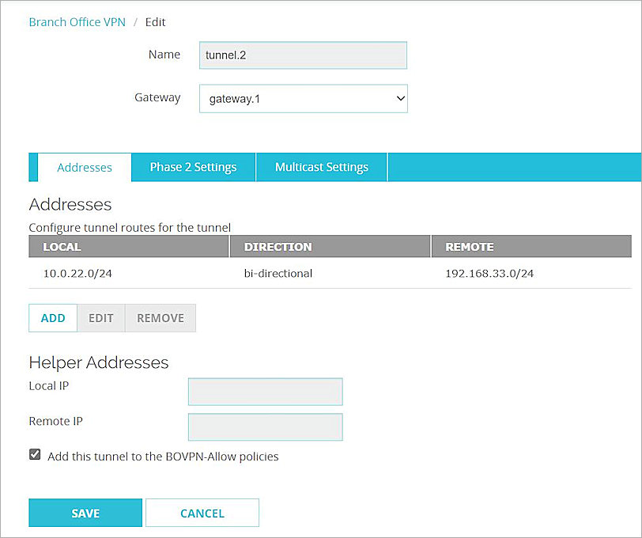
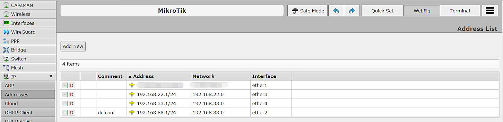
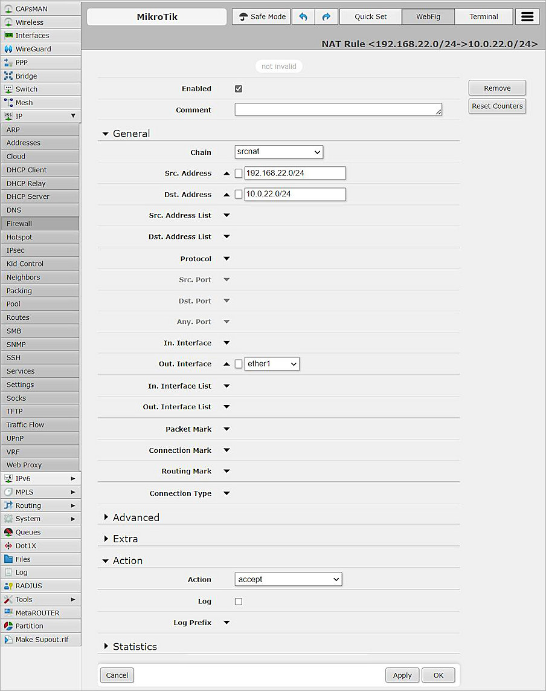
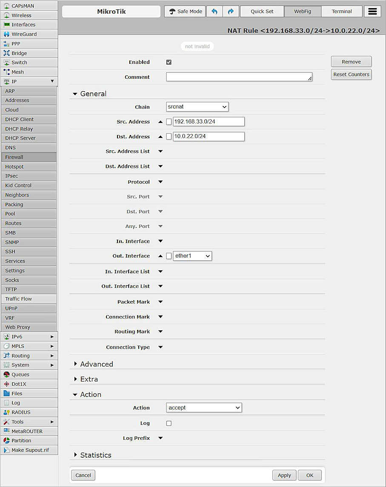
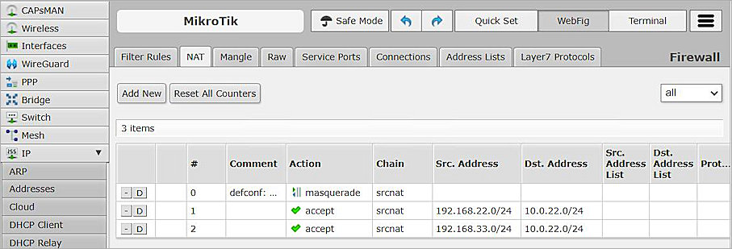
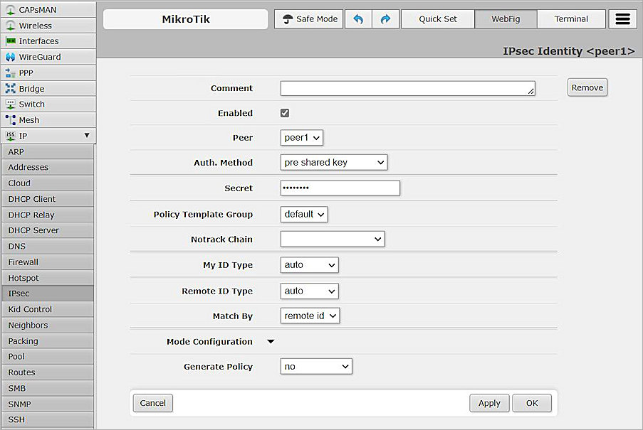
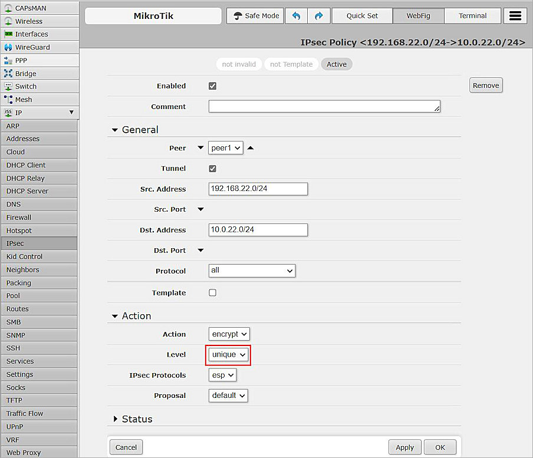
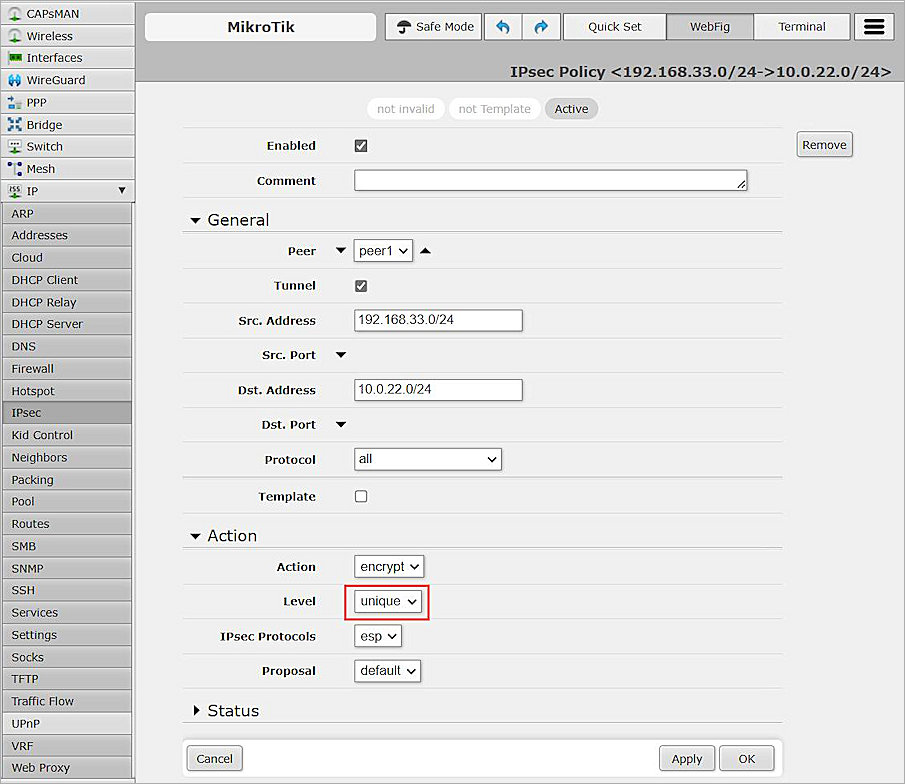
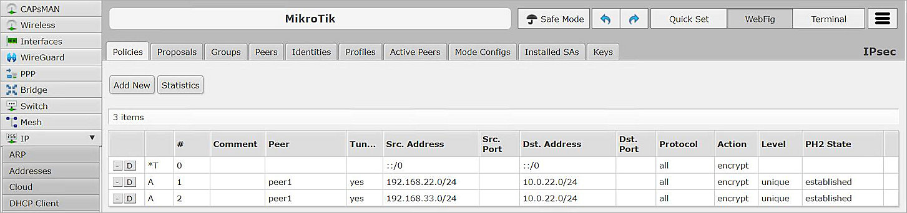

WatchGuard provides integration instructions to help our customers configure WatchGuard products to work with products created by other organizations. If you need more information or technical support about how to configure a third-party product, see the documentation and support resources for that product.
This integration guide describes how to configure a Branch Office VPN (BOVPN) tunnel between a WatchGuard Firebox and a MikroTik device.
Contents
Integration Summary
The hardware and software used in this guide include:
- WatchGuard Firebox
- Fireware v12.10
- MikroTik RB2011iL-RM
- Version RouterOS v7.10.2
Test Topology
This diagram shows the topology used to connect your WatchGuard Firebox and a MikroTik device through a VPN.

Configure the Firebox
This section describes how to configure the Firebox and BOVPN settings.
Configure Branch Office VPN Gateway General Settings
To configure BOVPN gateway general settings, from Fireware Web UI:
- Select VPN > Branch Office VPN.
The Branch Office VPN configuration page opens. - To add a gateway, in the Gateways section, click Add.
The Gateway Endpoint Settings dialog box opens. - In the Gateway Name text box, type the Gateway name.
- In the Address Family drop-down list, select IPv4 Address.
- In the Credential Method section, select Use Pre-Shared Key and String-Based.
- In the adjacent text box, type the pre-shared key.

- In the Gateway Endpoint section, click Add.
The Gateway Endpoint Settings dialog box opens. - From the External Interface drop-down list, select External.
- From the Interface IP Address drop-down list, select Primary Interface IPv4 Address.
The Primary Interface IP Address is the primary IP address that you configure on the external interface that you select. - Select By IP Address.
- In the adjacent text box, type the primary IP address of the External Firebox interface.

- Select the Remote Gateway tab.
- Select Static IP Address.
- In the adjacent text box, type the public IP address of your MikroTik connection.
- Select By IP Address.
- In the adjacent text box, type the public IP address of your MikroTik connection.
- Keep the default settings for all other options.

- Click OK.

Configure the Branch Office VPN Gateway Phase 1 settings
To configure Phase 1 settings, from Fireware Web UI:
- Select the Phase 1 Settings tab.
- From the Version drop-down list, select IKEv2.
- For all other settings, keep the default values.

- Click Save.

Configure the Branch Office VPN Tunnels
To configure BOVPN tunnels, from Fireware Web UI:
- On the Branch Office VPN page, in the Tunnels section, click Add.
The Branch Office VPN Tunnel configuration interface opens. - From the Gateway drop-down list, select the gateway that you added.

- In the Addresses section, click Add to configure tunnel routes for the tunnel.
The Tunnel Route Settings dialog box opens. - In the Local IP section, from the Choose Type drop-down list, select Network IPv4.
- In the Network IP text box, type the Network IP address, which is the internal network IP address of the WatchGuard Firebox.
- In the Remote IP section, from the Choose Type drop-down list, select Network IPv4.
- In the Network IP text box, type the Network IP address, which is the internal network IP address of the MikroTik device.
- For all other settings, keep the default values.

- Click OK.

- Click Save.

- Repeat Steps 1-10 to create another tunnel if you need multiple BOVPN tunnels.


For more information about Branch Office VPN configuration on the Firebox, go to Configure Manual BOVPN Gateways and Configure Manual BOVPN Tunnels
Configure the MikroTik Device
To configure the MikroTik device:
- Log on to the MikroTik Web UI. The default IP address and port are http://192.168.88.1 and ether2.
- Configure all required MikroTik interfaces.
- Verify that the MikroTik device can connect to the Internet.

Configure NAT
To configure NAT settings, from the MikroTik Web UI:
- Select IP > Firewall > NAT.
- Click Add New.
- From the Chain drop-down list, select srcnat.
- In the Src. Address text box, type the Network IP address, which is the internal network IP address of the MikroTik device.
- In the Dst. Address text box, type the Network IP address, which is the internal network IP address of the Firebox.
- From the Out. Interface drop-down list, select ether1.
- From the Action drop-down list, select Accept.
- Keep the default settings for all other options.

- Click Apply, and click OK.
Create Another NAT for Multiple BOVPN Tunnels
If you need multiple BOVPN tunnels, you can create another NAT:
- From the MikroTik user interface, create another NAT.

- Click Apply, and click OK.

Configure IPSec Settings
To configure IPSec settings on the MikroTik device:
- Select IP > IPsec > Proposals.
- Modify the default proposal.
- In the Name text box, type the proposal name or keep the default name.
- In the Auth. Algorithms section, select sha256.
- In the Encr. Algorithms section, select aes-256 cbc.
- From the PFS Group drop-down list, select modp2048.
- Keep the default settings for all other options.

- Click Apply, and click OK.

- Select the Peers tab.
- To add new peer, click Add New .
- In the Name text box, type the peer name.
- In the Address text box, type the IP address of the External interface of the Firebox.
- In the Local Address text box, type the IP address of the ether1 interface of the MikroTik.
- From the Exchange Mode drop-down list, select IKE2.
- Keep the default settings for all other options.

- Click Apply, and click OK.

- Select the Identities tab.
- To add a new Identity, click Add New .
- From the Peer drop-down list, select peer1.
- From the Auth. Method drop-down list, select pre shared key.
- In the Secret text box, type the secret. The secret must be the same as the pre-shared key specified in the Firebox settings.
- Keep the default settings for all other options.

- Click Apply, and click OK.

- Select the Profiles tab.
- Modify the default profile.
- From the Hash Algorithms drop-down list, select sha256.
- In the Encryption Algorithm section, select aes-256.
- In the DH Group section, select modp2048.
- Keep the default settings for all other options.

- Click Apply, and click OK.

- Select the Policies tab.
- To add a new policy, click Add New.
- From the Peer drop-down list, select peer1.
- Select Tunnel.
- In the Src. Address text box, type the Network IP address, which is the internal network IP address of the MikroTik device.
- In the Dst. Address text box, type the Network IP address, which is the internal network IP address of the WatchGuard Firebox.
- Keep the default settings for all other options.

- Click Apply, and click OK.
Create a New Policy to Support Multiple BOVPN Tunnels
To create a new policy, from the MikroTik Web UI:
- Open an existing policy.
- In the Action section, from the Level drop-down list, select unique.

- Click Apply, and click OK.
- You can now create a policy for a second tunnel.

- Click Apply, and click OK.

Test the Integration
To test the integration, from Fireware Web UI:
- Select System Status > VPN Statistics.
- Select the Branch Office VPN tab.
- Verify that the VPN is established.

- From the MikroTik Web UI, select IP > IPsec > Policies.
- Select the Policies tab and verify the results.

- Verify that hosts can ping each other successfully.